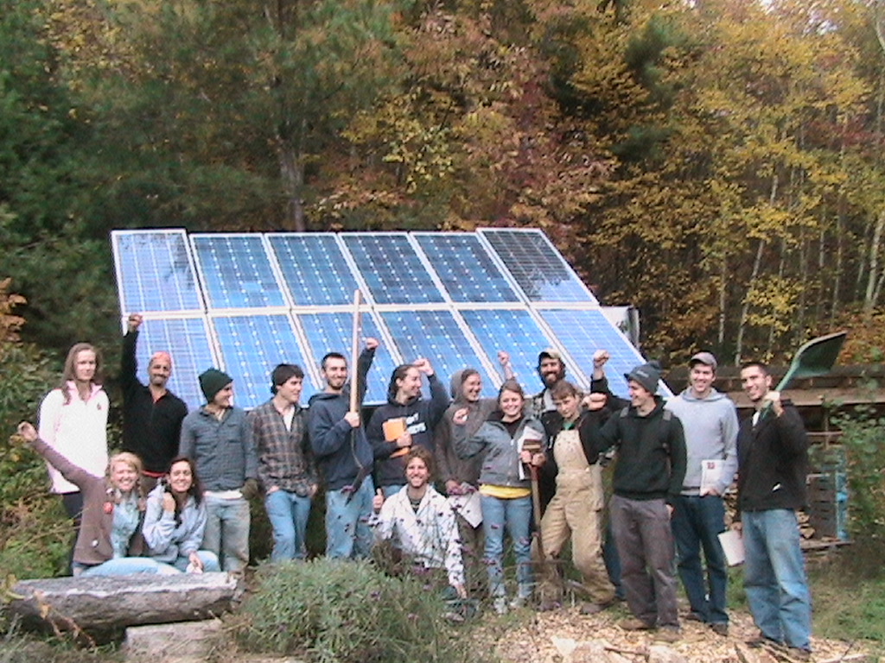

Seeds of Solidarity
Grow Food Everywhere
Renewable Energy and Design

Visitors sometimes ask us if using less energy and/or energy from renewable sources is a sacrifice. We’ve thought about this, and realize that the word sacred and sacrifice have similar roots. Yes, we need to be conscious of our energy use, but that feels like a good and sacred thing, rarely a sacrifice, and empowering in the truest sense of the word.
Seeds of Solidarity is “off the grid.” Two modest solar electric systems provide for all of our electricity needs in our home, the farm and apprentice housing including lights, house well pump and farm irrigation, refrigeration, computers, power tools, washing machine and rock and roll. We also have a van with a mobile solar electric system, and our farmstand refrigeration is solar powered. Our solar electric systems includes photovoltaic panels, batteries for storage, inverters to convert DC current to AC. Our photovoltaic systems have been installed with the support and brilliance of Bob Higgins, Atlantic Alternative Power in Gill, MA.Homepower Magazine (homepower.com) is an invaluable source of information on all aspects of renewable energy.
Energy Efficient Design:
We’ve designed and built all of the structures on the Seeds of Solidarity land. We combine conventional building techniques with materials that are recycled or energy efficient. Our design ideas are influenced by local materials, such as cedar beams and railings, and a Middle Eastern aesthetic, including stucco, plaster and curved forms that we feel drawn to and is part of our heritage. Our buildings are not connected to the utility grid, but utilize renewable energy (and a small amount of LP gas for cooking and on-demand hot water heating). Because of the super-insulated construction we only burn one to one and a half cords of wood each year to keep our home warm. On a sunny winter day, we rarely need to make a fire.
The construction techniques, components and materials we use include:
- Double walled construction
- Nine-inch super-insulated walls with blown in cellulose
- Insulated frost protected slab that minimizes excavation, concrete, and costs
- Passive solar heating and cooling • Hand cast concrete sills and counters
- Our own milled on site or local roughcut wood when possible for outbuildings-Solar electricity
- Solar preheated hot water with on-demand LP gas heater
- Composting toilet
- Plaster interior walls, stucco exterior
- Local artist made decor including iron railings and ceramic tile
Vehicle Power:
We use biodiesel, a vegetable-based fuel in our family car ( a 2002 Volkswagon Gulf), a Ford F350 farm truck, and the SOL Patrol E350 van. We blend biodiesel with fossil fuel diesel, especially in the winter months and depending on the vehicle and it’s fuel system sensitivity. Imagine the 440,000 school buses across the nation running on biodiesel, reducing childhood asthma, exposure to carcinogens, and reliance on imported oil. See worldenergy.net, veggievan.org, biodiesel.org, or yellowbiodiesel.com for more information about biodiesel. Vegetable-based engine oils and fuel conditioners can be purchased from renewablelube.com. Using SVO or straight vegetable oil for fuel is a great thing to do for those that drive regularly and requires a conversion kit. Our neighbor burns recycled vegetable oil in a waste oil furnace to heat his shop, which is great.